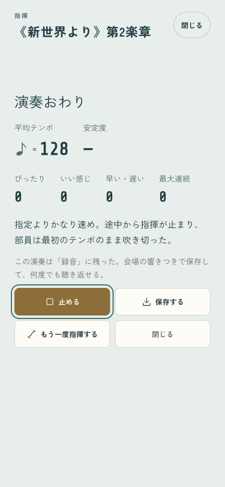
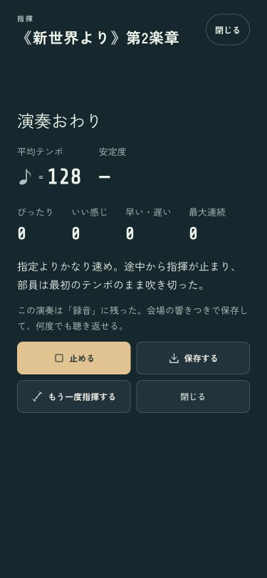
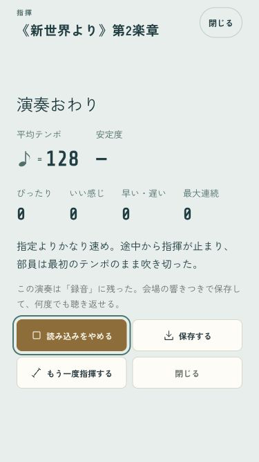
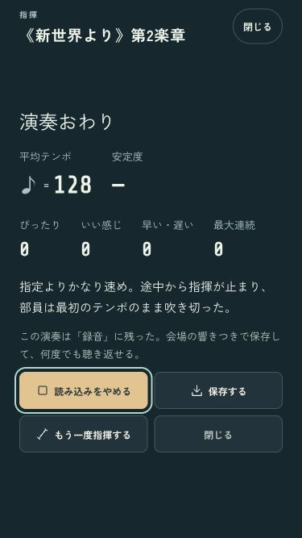

B · 舞台の中へ
指揮した音を、聴いて、止めて。
結果の同じボタンで録音を聴き返し・停止できます。読み込み待ちも中止でき、画面を閉じると音も止まります。


小さい画面と、読み込み待ち
高さ667pxでも操作は46px以上。同じボタンから読み込みを中止できます。


実際の録音・保存した指揮の時計・待機の中止・閉じる操作・1年分の進行を確認済み。
iPhoneへ更新済み。端末ロック中のため起動は未確認です。
ミラーリングなし · codex/design · pushなし · 変更と確認の記録